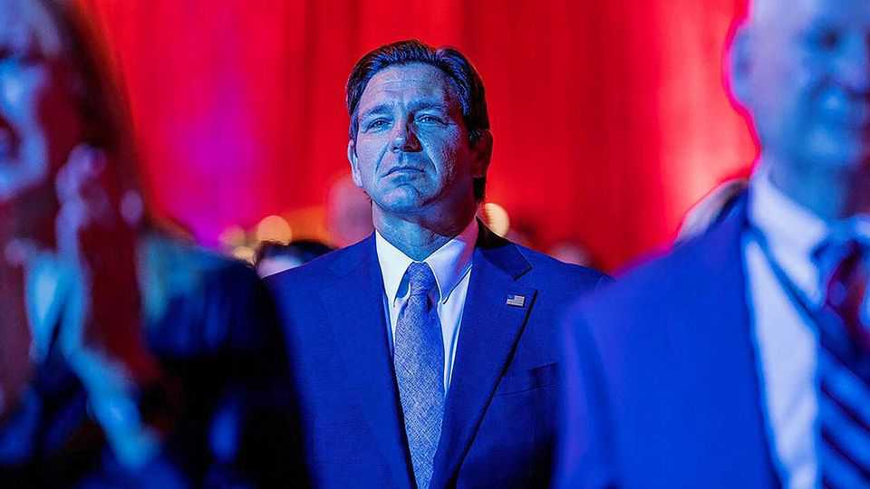
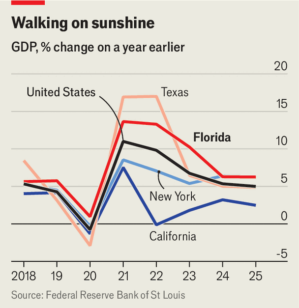

Florida was a swing state. Now it’s MAGA-land
Its next governor will have to focus more on costs than culture

Aug 13th 2026
He is never the most charming man in a room, but Ron DeSantis is often the most formidable. Speaking at a political club in Naples in February, Florida’s governor reflected on his two terms. “I sat there on the first day as governor, I looked around the empty office and I was just like, listen I don’t know what SOB is going to succeed me but they are not going to have a lot to do because I’m going to get all the meat off the bone that I can,” he said. Seven years into the job, Mr DeSantis reckons he has delivered. “That’s what we’ve done.”
On August 18th voters in Florida will choose the Democrat and Republican who will battle to become that SOB. Byron Donalds, a Republican congressman, is expected to win his party’s nomination handily. If elected governor in November, as pollsters predict, Mr Donalds will inherit a state that looks little like it did a decade ago. What was once America’s quintessential swing state has become a bastion of Republican power.
That is in part due to Donald Trump, with whom Mr DeSantis has had a tumultuous relationship. During the 2024 presidential campaign Mr Trump dismissed his then rival as “Ron DeSanctimonious”. The president has since chosen Floridians as some of his top advisers and made his Mar-a-Lago resort the White House’s unofficial southern annex. He has thus stamped Florida as MAGA-land.
Mr DeSantis, though, has transformed the state itself. Before the covid-19 pandemic, Democrats outnumbered Republicans and elections in Florida were nail-biters. But that began to change when, in the depths of the pandemic, Mr DeSantis broke with much of the country and declared Florida open for business. In just two years the state gained nearly 1m net residents, at a pace of 1,500 a day.
Remaining open, particularly in a state with so many old people, had a cost. During a wave of covid from July to November 2021, Florida’s per-person death rate was more than triple the national average. But Mr DeSantis faced little lasting backlash. Most new residents were registered Republicans. The state’s Democrats, meanwhile, struggled to recruit candidates or attract donors. In 2022 Mr DeSantis was re-elected by 19 points, the biggest margin for a Republican in state history. His party swept every statewide office and won a supermajority in the legislature.
One-party rule unleashed a policy blitz. Mr DeSantis enacted a six-week abortion ban, prohibited transgender medical care for children, created the biggest school-voucher programme in America and rewrote curricula at state universities. He also took on Disney over its opposition to a law that prohibited classroom instruction on sexual orientation and gender identity, revoking its special tax treatment. The fight became a cautionary tale for outspoken firms across the country.
To cement the state’s new political identity, Mr DeSantis rejected the legislature’s congressional map and drew his own, sacked two elected Democratic prosecutors and called special sessions to force lawmakers to act on his priorities. He also remade the judiciary, appointing six of the state Supreme Court’s seven justices and nearly 200 other judges. Lawmakers did not always welcome his demands, but the governor was quick to veto their projects or back challengers when they crossed him. “DeSantis is the 800-pound gorilla in Florida,” says Nick Iarossi, a strategist who worked on the governor’s campaigns. “No one wants to be on his bad side.”
During Mr DeSantis’s tenure Florida’s GDP growth has outpaced the national average (see chart). This year the state’s $1.8trn economy became the world’s 14th-largest, surpassing that of Australia and Mexico. Big firms such as Citadel and Palantir moved their headquarters to Florida. Mr DeSantis has an approval rating of just over 50%—higher than Mr Trump’s in the state.

Mr Donalds is nothing like Mr DeSantis. A congressman raised by a single mother in Brooklyn, he was arrested for possessing marijuana as a teenager. His life turned a corner, he says, after he committed himself to Jesus in the car park of a Cracker Barrel restaurant. He had a career in banking, then was elected to Congress. When insurgent House Republicans moved to oust Kevin McCarthy as speaker in 2023, they rallied around the affable Mr Donalds, elevating him as a national MAGA figure. Mr Trump is a fan. “RUN, BYRON, RUN!”, he wrote on social media last year.
Although Mr DeSantis quipped that Mr Donalds “hasn’t been a part of any of the victories that we’ve had here over the left”, the congressman only has nice words in return. “He’s done a phenomenal job,” he told voters in early August. On policy, he says, there is no daylight between them. His only public break with Mr DeSantis came over revisions to Florida’s African-American history curriculum, which asserted that slaves “developed skills” that “could be applied for their personal benefit”—a claim Mr Donalds, a rare black Republican, called “wrong”.
The next governor will have to focus more on costs than culture. Since 2020 Florida’s home prices and insurance premiums have surged by 50% and 75% respectively, faster than in most other states. Incomes have risen by only 30%. That is creating a crunch for ordinary people. Population growth is dramatically slowing. Mr Donalds says “affordability” is his top priority. Governors across the country say the same. If Mr Donalds can show them how, his effect on Florida could surpass even that of Mr DeSantis. ■
Stay on top of American politics with The US in brief, our daily newsletter with fast analysis of the most important political news, and Checks and Balance, a weekly note that examines the state of American democracy and the issues that matter to voters.